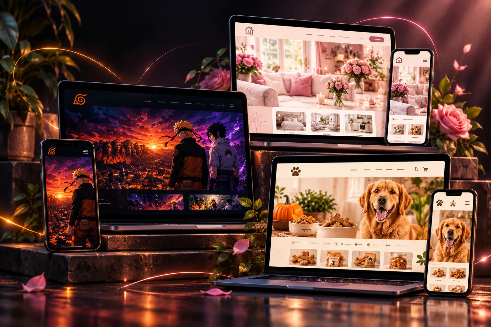
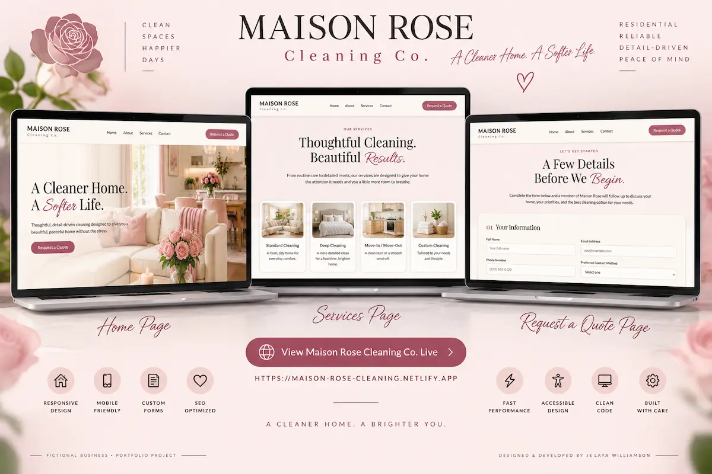
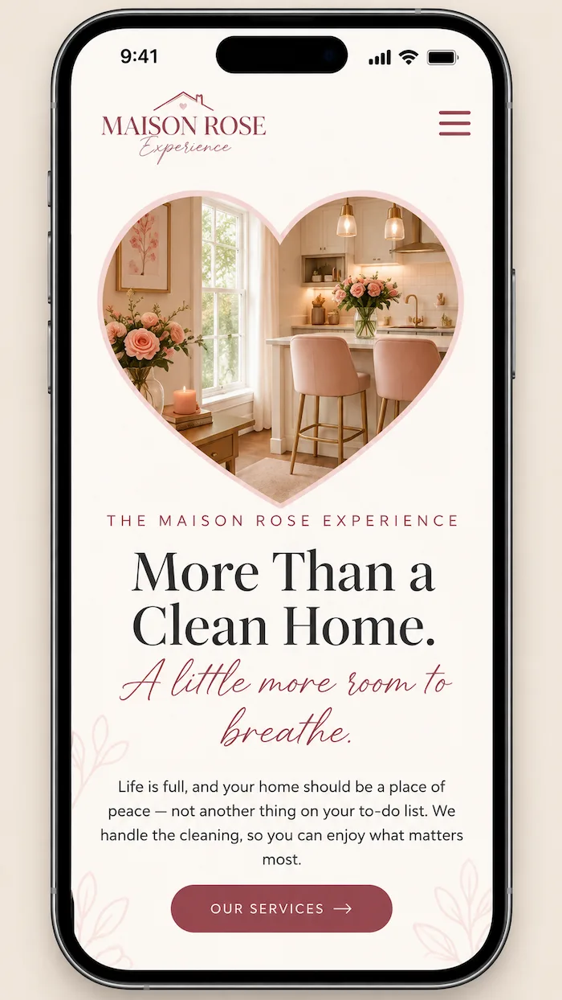

Front-End Development
Interfaces built for real screens.
Responsive layouts and interactions designed to work across desktop and mobile without sacrificing visual identity.
- HTML & CSS
- JavaScript interactions
- Responsive layouts
- Mobile navigation
< SELECTED WORK />
From responsive front-end experiences to full-stack ecommerce, each project represents another layer of what I can design, build, connect, and deploy.
Explore the Work
< design /> < develop /> < deploy />< PROJECT 02 />
Business Website · Multi-Page DevelopmentA polished, responsive service-business website designed to turn a soft visual identity into a clear digital experience where visitors can understand the brand, explore services, and move naturally toward taking action.
View Live Site

The Goal
Maison Rose was built to balance an elegant visual direction with practical website structure, making services and important information easy to find without losing the personality of the brand.
Development
The project uses responsive page layouts, clear navigation, organized service content, calls to action, reusable design patterns, and consistent styling across the website to create a cohesive experience on desktop and mobile.
Build Highlights
Portfolio concept project created to demonstrate responsive service-business website design and front-end development.
< CAPABILITIES />
Each project has expanded what I can build, connect, test, and launch. Together, they demonstrate experience across the full website journey—from the interface a visitor sees to the systems working behind it.
Front-End Development
Responsive layouts and interactions designed to work across desktop and mobile without sacrificing visual identity.
Business Web Experiences
Websites structured around what visitors need to understand, where they need to go, and what action the business wants them to take.
Ecommerce & Backend
Customer-facing ecommerce connected to backend logic, payments, stored data, order workflows, and transactional communication.
Launch & Workflow
Development doesn't stop when the code looks right. Projects are tested responsively, version-controlled, and deployed as working live experiences.
Technologies I've worked with across these projects.
< YOUR PROJECT NEXT? />
Every project starts with an idea. If you're ready to turn yours into a custom digital experience, let's talk about what we can build together.